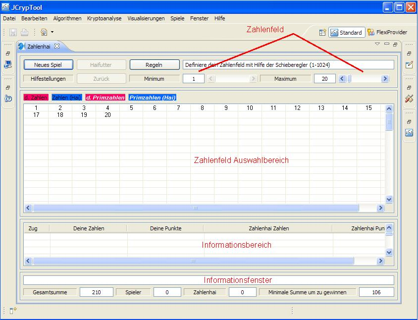

The Number Shark game is a tool to learn more about divisors and prime numbers. The tutorial is based on a number set from 1 to 20 (the number set can be changed by parameters). The game seems to be easy for a small number set, but is rather challenging for a huge number set.
The idea of the game is to win as much as possible numbers from a given number set. The sum or score of the numbers should be greater as the sum of the Number Shark numbers and as near as possible to the maximum sum or optimal score of the number set. After selecting one number, the Number Shark eats all free, real divisors of the number (e.g. all real divisors of 6 are 1, 2 and 3). The game is finished after all numbers have been selected or have been eaten by the Number Shark.
The game starts up with the window below. The number set is already set to include all numbers between 1 and 20. The Number Shark eats all free, real divisors of your selected number. The number itself is eaten by the Number Shark, if the selected number has no free, real divisors any more. So try to minimise the numbers eaten by the Number Shark to 1 or 2. To get an optimal score, select as first number always the largest available prime number, thus here the 19. The largest prime number has only the 1 as free, real divisor. You can select the number 19 in the number set selection area.
Thus after selecting the 19, the Number Shark eats the 1. After selecting the 19, the 19 and 1 will be coloured in the number set selection area. Both numbers are now out of the game and not active and not free any more. The window below shows the situation after pushing the number 19.

The info area and info window documents your move course. Beside the number of your step, your selected number, your current score as well as the numbers of the Number Shark, his current score will be recorded. At the bottom you can see at a glance your move course. This window can be copied for your documentation later. In addition you have information about the total sum of the number set numbers and the minimum sum, which must be reached to win the game. Furthermore your and the Number Shark current scores are emphasised.

During the move course it could happen, that numbers stay without free, real divisors and without being divisors for other free numbers. These numbers can not contribute to your score any more. If such a situation occurs the button "Eat" will be activated. The window below shows the tooltip text of the button "Eat". All numbers which can not contribute any more are listed. The button "Eat" gives you the possibility to take these numbers out of the game immediately (food for the Number Shark). It is recommended to push the button "Eat" after it has been activated. You gain a better overview for all interesting numbers. But pay attention, there is no Undo function for this action.

The window below shows the situation after pushing the button "Eat". All numbers, which have been removed, are now coloured. They are all out of the game and not free any more.

After the first move, the selection for the next moves will be more difficult. You should try to leave for the Number Shark as less as possible numbers. Best is only 1 divisor, in some cases also 2 divisors. But don't select too small numbers, which may have only one divisor, because they are needed as divisors for larger numbers. For the second move it is recommended to select either 15=3*5, 14=2*7 or 10=2*5. The window below shows the situation after pushing the 15.

To support you for the next decision some options can be activated. If you open the Preferences Window, the window below will open and the Number Shark preference page can be selected. In the top area, you can select a number set generation mode. You see, per default the first mode is enabled, which allows you to select a number set in the range from 1 to a maximum number. More details to the other modes can be found below (see also here: Manual).

Per default also the last support mode is selected. If you move the mouse over the field with the number 10, it gets highlighted with a grey background and a tooltip text occurs. The tip shows the free divisors of the number 10 still available. Thus only the 2 is a free available divisor. So we will select the 10 as the next number.

You can get more hints by clicking with the mouse on the button
"Support". The window below shows the situation after pushing the
number 10. The tooltip text recommends to push the number 20 for the next step.
Furthermore it tells you, that you can still win against the Number
Shark. Please be aware, that the proposal of the tool does not help you
to find an optimal score, but to win the game in any case. So you can
also check with the tool, whether you have still a chance to win or not
by playing your own move sequence. In this case we follow the
recommendation of the tool and push the number 20.
Pay attention: for large number sets the tip calculation time can
be very time consuming.

For the next three moves you can select the free numbers e.g. in the order 16, 12 and 14. All numbers have only one divisor left and all free divisors are different. If you would like to revise your decision after pushing the 12, please push the button "Undo". But pay attention, the button "Undo" undoes only your last move.

The situation after pushing the number 16 and 12. To revise your last decision, push the button "Undo" and then push 14 and again the number 12.


The last number is now the 18. Please push the 18 and the game is over. The window below shows the situation after pushing the number 18. Congratulations, you win the game. In this case your score is even optimal. You see, that there is also a different move sequence available, which leads to the optimal score. You can see your move sequence below the info area in the info window. You can copy your move sequence out of the info window for your documentation.

You can now start a new game with the same number set by just pushing the button "New Game". If you prefer a different number set, please use the slider for the maximum number to select a different number set before pushing the button "New Game".
By law we must explicitly ask you to read the license conditions before using the Number Shark.